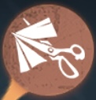

第五人格 アップデート追跡 キャラ調整・天賦調整
キャラクター調整と内在人格調整を記録
📅 2025年11月20日アップデート

祭司
直線の通路を開く動作時間が0.12秒短縮されました。
サバイバーに付近の直線の通路の輪郭が表示されるようになりました。

調香師
調香師が「忘却の香」を使用して発動時の状態・位置に戻ると、追加で通常攻撃1回分のダメージ軽減効果を獲得するようになりました。
この効果は2.5秒間持続し、「忘却の香」で恐怖値を回復した場合、ダメージ軽減効果の数値はその分減少します。この効果は調香師専用です。
この効果は2.5秒間持続し、「忘却の香」で恐怖値を回復した場合、ダメージ軽減効果の数値はその分減少します。この効果は調香師専用です。
サバイバーが拘束されているロケットチェアの付近12メートル以内で獲得したダメージ軽減効果は、持続時間が半分になります。
調香師が治療を受ける時間を15%増加から10%増加に調整しました。

玩具職人
玩具職人以外の全てのサバイバーが玩具玉の持ち物を拾い、直接使用できるようになりました。
サバイバーが玩具玉の持ち物を使用すると、自分のメインの持ち物が15秒間のクールタイムに入ります。同様に、メインの持ち物を使用すると、玩具玉の持ち物が15秒間のクールタイムに入ります。
サバイバーが玩具玉の持ち物を使用すると、自分のメインの持ち物が15秒間のクールタイムに入ります。同様に、メインの持ち物を使用すると、玩具玉の持ち物が15秒間のクールタイムに入ります。
玩具職人は移動しながら弾射板車の弾射軌道を確認できるようになりました。
玩具職人が弾射板車を設置する動作の間、弾射ボタンが早めに表示され、タップすることで弾射を早めに行うことができるようになりました。
玩具職人が弾射板車を回収する時間が短縮されました。
ランダムで獲得する玩具玉の持ち物に、鎮静剤が含まれなくなりました。
玩具職人が箱を開ける速度が100%増加から30%増加に調整されました。

教授
マップ内に固定で生成される鱗の数が2つに増加しました。
鱗硬化でのブロックに失敗、または制御効果のみをブロックした場合のクールタイムが40秒に短縮されました。

カウボーイ
投げ縄のターゲット設定が追加されました。全て、キャラのみ、マップ内モジュールのみから選択できます。

医師
新たにサブ持ち物「薬物増強剤」が追加されました。使用すると即座に自己治療進捗が35%増加し、2回使用可能です。
医術熟練が提供する「全員の治療速度が5%上昇する」効果が削除されました。

弁護士
対戦開始から30秒間、弁護士が移動や板・窓の乗り越えを行う際、要点記録の効率が2倍になります（更に地図を使用している場合、効率は3倍になります）。

人形師
不感でダメージや制御効果を防いだ場合、人形師の姿に戻ってから1.5秒間、移動速度が50%上昇します。
窮余の一策状態（危機一髪）でも「ルイ」に変身できるようになりました。
「ルイ」の持続時間と柔軟パーツによる加速時間が8秒から9秒に増加しました。

庭師
気絶などの制御効果中でも回想スイッチをオンオフでき、気絶などのその場から動かないタイプの制御効果中でも、回想を行えるようになりました。
回想のダメージブロック効果が、累計で通常攻撃1回分のダメージを防いだ後に消失するようになりました。

芸者
通常攻撃距離が2.95メートルに、溜め攻撃の距離が3.21メートルに増加し、通常攻撃が命中しなかった場合のアクション回復時間が0.66秒に短縮されました。
芸者の攻撃がモジュールに命中する判定を改善し、モジュール命中時のアクション回復時間が0.95秒に短縮されました。
スキル「離魄移魂」で空中に飛び上がる時間が短縮され、この状態で「刹那生滅」を使用した際のクールタイムが4秒になります。
アゲハを放つロジックを最適化し、アゲハがマップモジュールの内部に放たれる確率を減少させました。

雑貨商
雑貨商の砕石売買におけるダメージスキル判定を最適化し、ロジックと表現がより一致するようにしました。

漁師
サバイバーが淵を離れてから湿気が毎秒5%減少するまでの時間が9秒から10秒に調整されました。
回遊状態でない場合でも、驚波を放つと同時に即座に回遊状態に入り、漁狩のクールタイムをリセットできるようになりました。回遊状態でない場合、このスキルには40秒のクールタイムがあります。
通常攻撃前のアクション時間がわずかに増加しました。

泣き虫
怨霊消滅のクールタイムが15秒から13秒に短縮されました。
泣き虫の視点で怨霊がサバイバーに命中した際の効果音が新たに追加されました。
泣き虫のカメラと視点の高さが最適化されました。

ビリヤードプレイヤー
仮想の怪物、躍進、手球を使用する際の撞点と軌道選択ロジックを最適化し、位置の選択ミスの確率を減少させました。
手球を放つ際に画面の端付近にある撞点と軌道を選択しないようにする機能が新たに追加され、位置選択ミスの確率を減少させました。
📅 2024年9月10日アップデート

患者
患者が鉤爪を使用する過程で攻撃を受けると、通常通りダメージを受けますが、鉤爪が中断されなくなります。
患者が鉤爪を使用する際、使用アクション中にスキルが中断された場合、鉤爪の使用回数が返還されるようになりました。
患者が鉤爪を使用する際のアクション時間が短縮されました。
患者が障害物に引き寄せられる速度がわずかに速くなりました。
患者が障害物を蹴って飛び越えた後の着地アクション表現が改善されました。

足萎えの羊
怨みの力の上限が120から110に減少しました。
2段階怨みの力回復速度が2.1/秒から2.0/秒に減少しました。
サバイバーが檻を通過した後の転移クールタイムが1.8秒から1.6秒に短縮されました。

フラバルー
ダブルサプライズのクールタイムが14秒から15秒に延長されました。
空中ブランコのチャージ時間が19秒から20秒に増加しました。

白黒無常
サバイバーが鎮魂傘の効果範囲から離れた後も、同じマイナス効果が持続する時間が8秒から5秒に短縮されました。

破輪
沈黙の輪のチャージ時間が18秒から20秒に変更されました。
寡黙のチャージ時間が14秒から16秒に増加しました。

昆虫学者
昆虫学者が虫の群れの操作を切り替える際のクールタイムが2.5秒に短縮されました。
昆虫学者が虫の群れを集めるアクション速度が向上しました。
虫の群れが包囲中の昆虫学者が木の板を落とす、板・窓を乗り越える、暗号機を解読する、ロケットチェアにいるサバイバーを救助するなどの操作を行えるようになりました。
弁護士
弁護士が地図を使用しながらロケットチェアにいるサバイバーを救助できるようになりました。

脱出マスター
脱出術で移動可能なロケットチェアの範囲が38メートルから47メートルに拡大されましたが、移動後の救助不可時間が1秒増加しました。
スモークジェネレーターのクールタイムが20秒に短縮されました。
他のサバイバーとハンターが同時にスモークエリアの付近にいる場合、ハンターの位置がそのサバイバーに表示されるようになりました。
スモークエリアにおけるサバイバーの視認性が向上しました。ハンターの視認性は変わりません。
「脱出マスター」がスモークエリアを出入りした時、移動速度が35%上昇します。この効果は1秒間持続し、3.5秒ごとに1回発動可能です。
「脱出マスター」が板や窓を乗り越える際に二重フェイクを発動し、その後すぐに再度板や窓を乗り越える場合、必ず速い乗り越えになります。

幸運児
幸運児が箱を開ける度に次に箱を開ける時間が2.5秒増加するようになりました。最大で7.5秒増加可能です。

応援団
鼓舞の移動速度低下量が40%から30%に減少し、減速の持続時間が3.5秒に短縮されました。
仲間がダウンした際に熱血を使用する場合に消費する激励スタック数が25/35/40スタックに減少しました。

レディ・ファウロ
対戦中の暗号機解読進捗の統計に関して、妙計で指定された暗号機の減少進捗が50%分反映されるようになりました。この調整は対戦中の解読速度には影響せず、暗号機解読による演繹得点や対戦後の解読進捗統計のみが減少します。
2025年11月20日 内在人格調整
📅 2025年11月20日
ハンター内在人格調整
個別の内在人格画像は各項目に追加可能
ハンター内在人格調整内容
「中毒症」
変更前
自身の周囲24メートル以内にロケットチェアに拘束されていないサバイバーが2/3/4人いる時、気絶などの強力なコントロール効果を受けた後の回復速度が10%/25%/40%上昇する。
→
変更後
自身の周囲24メートル以内にロケットチェアに拘束されていないサバイバーが2/3/4人いる時、気絶などの強力なコントロール効果を受けた後の回復速度が8/24/40%上昇する。
「飢餓」
変更前
ゲーム開始から50秒間、自身の18m以内にサバイバーがいない場合、全サバイバーの解読速度が9%低下。
→
変更後
前提条件のサバイバーとの距離が16メートルに縮小され、解読速度の減少値が12%に増加しました。
「慣性」
変更前
攻撃の回復速度が10％上昇。
→
変更後
攻撃回復速度上昇量が5%に減少しました（復讐者、断罪狩人、リッパー、結魂者、黄衣の王、写真家、狂眼、泣き虫、ヴァイオリニスト、「悪夢」、夜の番人、「フールズ・ゴールド」の攻撃回復速度の基礎値が5%増加）。
「封鎖」
変更前
ゲーム開始時、自身から最も遠い1台の暗号機を40秒間封鎖し、サバイバーはその暗号機を解読できない。
→
変更後
暗号機が封鎖される時間が30秒に短縮されました。
「狂暴」
変更前
ロケットチェアに拘束されているサバイバーが居る時、攻撃回復速度が15/20/25％上昇。
→
変更後
攻撃回復速度上昇量が10/15/20%に下方修正されました。
「怒り」
変更前
スタンや風船もがきによる行動不能からの回復速度が10/15/20％上昇。
→
変更後
スタン、風船もがきによりサバイバーを落とす、あるいはその他の強力なコントロール効果を受けた後の回復速度が7/15/20%に下方修正されました。
📅 2025年11月20日
サバイバー内在人格調整
個別の内在人格画像は各項目に追加可能
サバイバー内在人格調整内容
「癒合」
変更前
負傷中は1秒ごとに治療進捗が0.3%/0.45%/0.6%自動で増加（最大30%/45%/60%）
→
変更後
負傷状態で治療進捗が緩やかに増加する速度が毎秒0.2%/0.4%/0.6%に調整され、最大増加値が20%/40%/60%に変更されました。
「接触効果」
変更前
自身または仲間の治療が成功した時、治療を受けた対象の移動速度が15%/25%/35%上昇（1.5秒間）。
→
変更後
治療を受けた後の加速効果が16%/28%/40%に増加しました。
「感覚順応」
変更前
16m以内でハンターが板破壊や窓乗り越えを行うと、ハンターを5秒間強調表示。
→
変更後
16m以内でハンターが板破壊や窓乗り越えを行うと、ハンターを7秒間強調表示に調整。
「気が散る」
変更前
脱出ゲートが開ける状態になると同時に、5秒間ハンターを強調表示する。
→
変更後
脱出ゲート通電後、40秒ごとにハンターの位置を5秒間表示するようになりました。
「膝蓋腱反射」
変更前
1. 窓を乗り越えた後、移動速度 +50%（3秒）2. 板を乗り越えた後、移動速度 +50%（3秒）
※ クールタイム40秒、別管理
※ ハンターが警戒範囲内にいない場合は 25% に減少
→
変更後（追加要素）
元々の加速効果終了後、ハンターの警戒範囲内にいる場合、さらに4秒間移動速度が8%増加します。
「観客効果」
変更前
他のサバイバーがロケットチェアに拘束された後、自身の解読速度が12%上昇する。
→
変更後
他のサバイバーがロケットチェアに拘束された後の自身の暗号解読速度上昇量が10%に減少しました。
🧠 2025年9月10日 内在人格調整
📅 2025年9月10日
ハンター内在人格調整
個別の内在人格画像は各項目に追加可能
⚖️ ハンター内在人格調整内容
🪓 「枯木を倒す」
変更前
異なるサバイバーを 2/3/4人ダウン させると、攻撃回復速度が 5%/10%/15%上昇（永続）
→
変更後
異なるサバイバーを 2/3/4人ロケットチェアに拘束 すると、攻撃回復速度が 5%/10%/15%上昇するように調整
😨 「パニック」
変更前
負傷・ダウン・拘束中のサバイバー1人ごとに、すべてのサバイバーの解読・治療・破壊速度を 3%低下 （最大 9%）
→
変更後
サバイバーの解読・治療・破壊速度低下量が 3%から2.5% に調整
🔥 「執念」
変更前
追撃状態を離脱後、周囲16m以内に行動可能なサバイバーがいない時、移動速度 +6%（最大15秒）
→
変更後
発動後の移動速度増加量が 6%から5% に調整
☠️ 「中毒症」
変更前
自身の周囲24m以内にロケットチェアに拘束されていないサバイバーが 2/3/4人 いる時、 スタン後の回復速度が 10%/25%/40%上昇 ＋気絶時、周囲24m以内のサバイバーに4秒間 10～20%の減速効果
→
変更後
効果範囲が 20メートルに縮小、気絶効果発動時のサバイバーへの減速効果が 最大20%（最低10%）から最大16%（最低8%） に、持続時間が 4秒から3秒 に短縮

🎯 「指名手配」変更前
ロケットチェアに拘束中、健康・負傷状態のサバイバーが3人以上いるとランダムで1人を 強調表示 （救助後も20秒継続）。ハンターの移動速度は 4%/2%/0%低下
→
変更後
レベル1/2の指名手配でサバイバーの輪郭が表示される時間が 10秒/30秒に短縮、その間のハンター自身の移動速度低下量が 4%/2%から2%/1% に調整
🚪 「幽閉の恐怖」
変更前
通電後20秒以内に行動可能なサバイバーが4人または3人いる場合、 ゲート開放速度が 70%（4人）/15%（3人）ダウン
→
変更後
ゲートの開放速度低下量が 70%/15%から65%/10% に調整
🧽 「掃除屋」
変更前
24/28/32m以内の治療中サバイバーを強調表示し、治療時間を 25%/40%/55%増加
→
変更後
レベル1/2/3の掃除屋で治療及び治療を受けるサバイバーの表示範囲が 24/28/32メートルから固定32メートル に変更、治療時間増加量が 25%/40%/55%から20%/40%/60% に調整
⚠️ 「警戒」
変更前
最初の暗号機3台が解読完了するごとに10秒間、移動速度 +6% ＆ 板破壊速度 +15% （重複可。ただし拘束発生で効果無効）
→
変更後
移動速度増加量が 6%から9% に上昇
🔧 「巨大ペンチ」
変更前
風船に縛られたサバイバーの抵抗速度を 5%/10%/15%低下 ＋風船解除時、全サバイバーの解読速度を8秒間 10%/15%/20%低下
→
変更後
サバイバーが風船からもがいて解放されるか仲間に救援された時、全サバイバーの解読速度低下量が 10%/15%/20%から15%/20%/25% に上昇
🍽️ 「飢餓」
変更前
開始50秒間、自身の18m以内にサバイバーがいない場合、全サバイバーの解読速度 6%低下
→
変更後
解読速度低下量が 6%から9% に上昇
📅 2024年9月10日
サバイバー内在人格調整
個別の内在人格画像は各項目に追加可能
⚖️ サバイバー内在人格調整内容
🏠 「避難所」
変更前
ダウン状態での自己治癒および治療を受ける速度上昇効果（詳細数値不明）
→
変更後
ダウン状態での自己治癒および治療を受ける速度が 8%/16%/24%に減少
👥 「観客効果」
変更前
サバイバーが得る解読速度増加量が 8%
→
変更後
サバイバーが得る解読速度増加量が 8%から12% に上昇
みんなのコメント